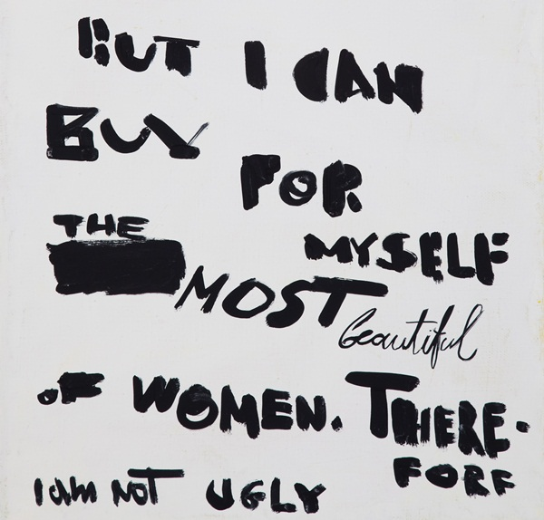
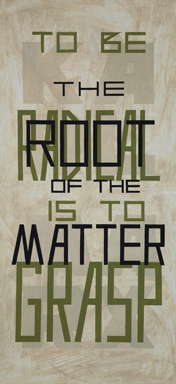
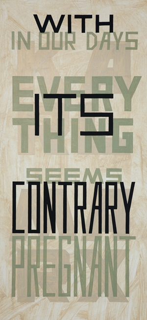

-
Not Ugly: Dmitry Gutov at Scaramouche
by Yulia Tikhonova October 7, 2010
At the opening at Scaramouche, a gallery on the Lower East Side, visitors drank wine and murmured appreciation for canvases emblazoned with words calling people to revolution. The work came from Russia: it was leading Moscow conceptualist Dmitry Gutov’s solo debut in New York, where he offered attractive renderings of various phrases once thundered by Karl Marx.
 The ten canvases in the show, thinly painted in light ochre and shades of brown-green, feature phrases from the Grundrisse, the crucial collection of preparatory notebooks for Das Kapital, as well as from other speeches and publications. By using a font streamlined a-la Rodchenko, the artist evokes the visual economy of the Russian avant-garde, while his tall, elongated canvases recall protest banners.
For his own part, Gutov has not allowed the collapse of the Eastern Bloc to dent his enthusiasm for the old ideas, having long been an active member of the Karl Marx School of the English Language in St. Petersburg. This group aims to purify Marx’s thinking, distilling still-revolutionary concepts from decades of officially sanctioned misinterpretations. Upon beginning his work with the school, Gutov started to hand-write Marx’s statements on canvas and cast them into metal sculptures. The very title of this show, In Our Days, Everything Seems Pregnant with its Contrary is from a speech given by Marx at the founding of the People’s Paper, and testifies to the high esteem in which Gutov continues to hold the philosopher. There is a distinct tension, however, between the sheer attractiveness of Gutov’s work and the seriousness with which he would have us approach the ideas represented therein. Though the perceived antagonism between left politics and pretty surfaces is perhaps less a theoretical position than a religious hangover – a kind of lingering, Judeo-Christian suspicion of appearance – this does not make it any less present or powerful. And what is America–the Soviet Union’s great capitalist nemesis and victor of the Cold War–to make of Gutov’s intentions?
The painted word has informed Gutov’s works for the last two decades. Previously the artist has copied lyrics of Pushkin, Shakespeare, and a controversial Russian revolutionist Mikhail Lifshitz. Similar to Robert Barry but on more painterly scale, Gutov either doodles (included in the show are smaller works written by free-hand) or neatly prints the phrases.
Here, Gutov highlights the words in the middle of a phrase in large bold, black font. The rest of the quote, cast in a lighter hue, recedes into the background. Often key words are barely readable, inscribing into the work the historical process of collective memory that has filtered these quotes along their jouney to the modern viewer. The visual play of light and dark, push and pull creates an inverted perspective, transforming the surface of the canvas into a site packed with contested meaning. The titles become a sort of key against which we juxtapose the artist’s reorganization of the words, and the distance between the two arrangements becomes significant. In one work To be Radical is to Grasp the Root of the Matter, Marx’s words pile on top of each other, with “root” pressing in on “matter.” In order to get the order ‘correct’ we have to pay close attention to the colors and layers, but by this point we are already interpreting, already rethinking Marx’s words in reference to their context. Almost without our realizing it, Gutov has us rehearsing precisely the philological relation to Marx’ work that was eclipsed by Soviet dogmatism. Looking even deeper, we see the elegant, capitalized name of Karl Marx, laid out as a sort of logo for the thinker. At the literally deepest level of the work, Gutov veers dangerously close to branding. What is he pursuing here? Is Gutov claiming that any reanimated Marxism must negotiate the reality of the world system – in which marketing, branding, and image play paramount roles? Or is he cynically commenting about his own presence within the gallery, drawing attention to its neutering effect on radical ideas?
Perhaps the artist is simply lamenting the lost legacy of Marx, as not even a contemporary crisis of capitalism seems capable of resurrecting him. Today, while exhibiting in major international venues, Gutov is part of revolving gallery world. This world may not be interested in the failure of the past, but clearly remains happy to endorse its branded reclamation.

1 Comment
Grammars of Identity: Minimal Differences at White Box
[...] I wrote about paintings by Dmitry Gutov an artist who marked historical difference by painting quotes from Karl Marx in a way that almost [...]